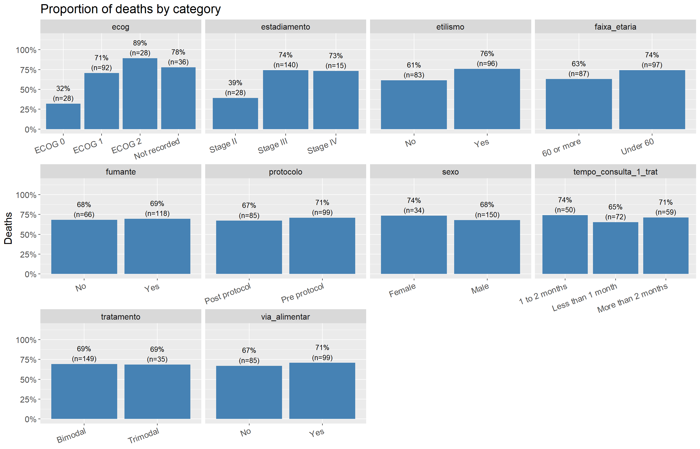
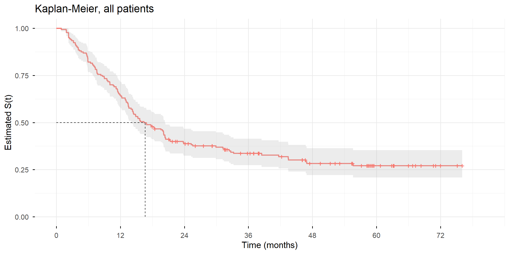
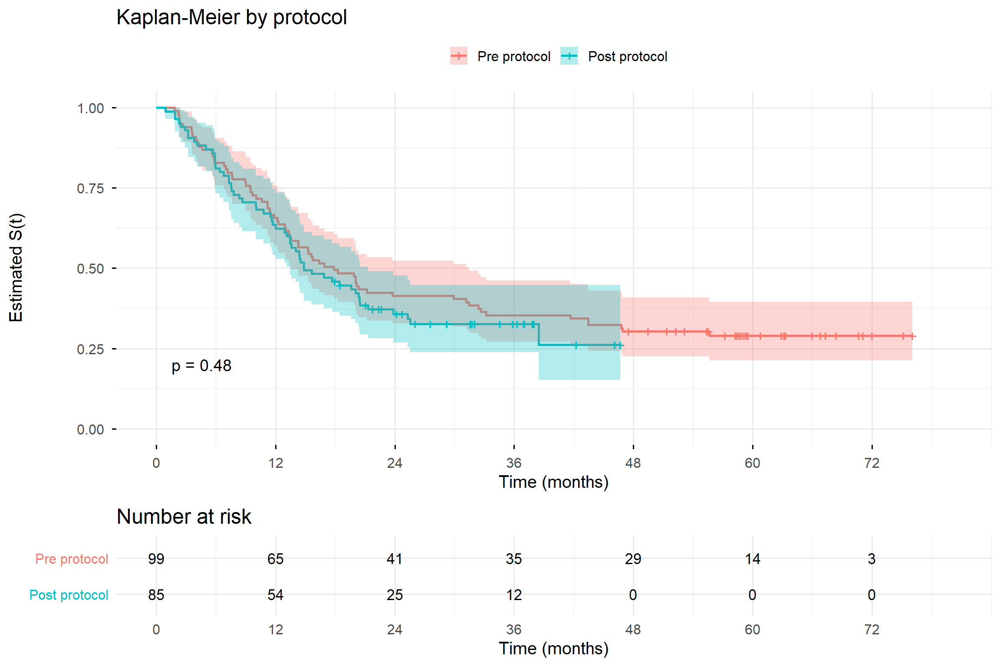
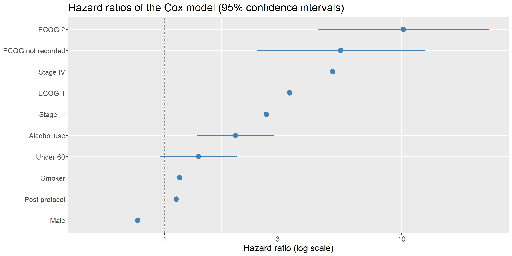

Survival Analysis of Patients with Esophageal Cancer Before and After an Institutional Care Protocol
Hugo Batista da Silva
About the project
This project was the statistical analysis of a final paper of a medical residency in Clinical Oncology, carried out at a cancer hospital in Vitória, Espírito Santo. In August 2018 the hospital introduced an institutional care protocol for esophageal cancer, whose main goal was to reduce the time between the patient’s first consultation and the start of treatment.
The question of the study was: did survival change after the protocol? To answer it, the patients diagnosed with esophageal cancer who started treatment at the hospital were followed from the first consultation until death or until the end of the data collection, and the patients treated before and after the protocol were compared.
The analysis has two parts. The first one is descriptive: the profile of the patients and how it changed with the protocol. The second one is the survival analysis, with Kaplan-Meier curves, log-rank tests and, finally, a Cox regression model adjusted for the characteristics of the patients.
The dataset
The data come from medical records, and since they are sensitive health data protected by the Brazilian data protection law (LGPD), the original database cannot be published. The database used on this page is synthetic: it has exactly the same structure as the original spreadsheet (same variables, same codes, same proportion of excluded records), and it was generated from the distributions and the models fitted on the real data. No real patient is in it, but the results are very close to the real ones.
Time between first consultation and treatment; (1) less than 1 month, (2) 1 to 2 months, (3) more than 2 months
via_alimentar
Use of an alternative feeding route (tube); (1) yes, (2) no
Data treatment
The study includes only the patients who received bimodal or trimodal treatment and whose vital status is known. The outcome is the death caused by the disease or by the treatment; patients who died from other causes or from an unknown cause are excluded, because their death says nothing about the effect of the treatment.
The protocol started on July 31, 2018: patients with the first consultation up to this date are “pre protocol”, the others are “post protocol”. The survival time is counted in months from the first consultation until death. For the patients still alive the time is counted until the end of the data collection: these are censored observations, we know they survived at least that long.
protocolo obito N
<fctr> <char> <int>
1: Pre protocol Dead 70
2: Post protocol Dead 57
3: Pre protocol Alive (censored) 29
4: Post protocol Alive (censored) 28
After the treatment, 184 patients remain in the study, 127 of them dead and 57 alive at the end of the data collection.
Descriptive analysis
Time between the first consultation and the treatment
The main goal of the protocol was to start the treatment earlier, so this is the first thing to verify:
kable(dcast(dataset[!is.na(tempo_consulta_1_trat), .N, by = .(tempo_consulta_1_trat, protocolo)], tempo_consulta_1_trat ~ protocolo, value.var ="N"),col.names =c(tr("Time to treatment", "Tempo até o tratamento"), niveis_protocolo))
The difference is large and significant: after the protocol, most patients started the treatment in less than one month, while before it the most common situation was a wait of more than two months. The protocol reached its main goal.
Profile of the patients by protocol
The table below shows the distribution of each variable in the two periods. If the groups are different, any difference in survival can be caused by the profile of the patients and not by the protocol.
The two groups are not equal. After the protocol there are more patients in stage IV, the most advanced one, and the ECOG performance status was recorded for almost every patient, while before it was missing in about a third of the records. These differences will be taken into account in the Cox model.
Deaths by variable
To have a first idea of which variables are related to death, the graph shows the proportion of deaths in each category:
dataset_aux <-rbindlist(lapply(c("protocolo", variaveis, "tempo_consulta_1_trat"), function(v) dataset[!is.na(get(v)), .(prop_obito =mean(obito_geral), n = .N), by = .(category =as.character(get(v)))][, variable := v]))ggplot(dataset_aux, aes(x = category, y = prop_obito)) +geom_col(fill ="steelblue") +geom_text(aes(label =paste0(round(100* prop_obito), "%\n(n=", n, ")")), vjust =-0.2, size =3.5) +facet_wrap(~ variable, scales ="free_x", ncol =4) +scale_y_continuous(labels = scales::percent, limits =c(0, 1.15), breaks =seq(0, 1, 0.25)) +theme(text =element_text(size =15), axis.text.x =element_text(angle =20, hjust =1)) +labs(title =tr("Proportion of deaths by category", "Proporção de óbitos por categoria"), x =NULL, y =tr("Deaths", "Óbitos"))

Most variables have similar proportions of deaths between their categories. The clearest differences appear in stage and ECOG: the more advanced the disease and the worse the performance status, the higher the proportion of deaths. Alcohol use also shows a moderate difference. However, the proportion of deaths ignores time and the different follow-up of each patient, so the survival analysis is the right tool to compare the groups.
#Cleaning the environmentrm(perfil, dataset_aux)invisible(gc())
Survival analysis
In survival analysis the variable of interest is the time until an event, here the death. Its main feature is that it incorporates incomplete times (censored observations): the patients who were alive at the end of the study did not have the event, but their follow-up time is still information.
The survival function \(S(t) = P(T \geq t)\) is the probability that a patient survives beyond time \(t\). It is estimated with the Kaplan-Meier estimator:
where \(d_j\) is the number of deaths at time \(t_j\) and \(n_j\) the number of patients still at risk. To compare the curves of two or more groups, the log-rank test is used, with the hypotheses:
\(H_0 =\) There is no difference between the survival curves.
\(H_1 =\) There is a difference between the survival curves.
Overall survival
fit_geral <-survfit(Surv(tempo, obito_geral) ~1, data = dataset)fit_geral
Call: survfit(formula = Surv(tempo, obito_geral) ~ 1, data = dataset)
n events median 0.95LCL 0.95UCL
[1,] 184 127 16.6 14.3 20.4
ggsurvplot(fit_geral, data = dataset, conf.int =TRUE, surv.median.line ="hv", legend ="none",xlab =tr("Time (months)", "Tempo (meses)"), ylab =tr("Estimated S(t)", "S(t) estimada"),title =tr("Kaplan-Meier, all patients", "Kaplan-Meier, todos os pacientes"),break.time.by =12, ggtheme =theme_minimal(base_size =15))

The median survival of the patients is 16.6 months: half of the patients died before this time. The curve falls quickly in the first two years, which is expected for a disease usually diagnosed in advanced stages.
Survival by protocol
fit_protocolo <-survfit(Surv(tempo, obito_geral) ~ protocolo, data = dataset)fit_protocolo
Call: survfit(formula = Surv(tempo, obito_geral) ~ protocolo, data = dataset)
n events median 0.95LCL 0.95UCL
protocolo=Pre protocol 99 70 17.9 13.5 31.4
protocolo=Post protocol 85 57 14.9 13.5 21.3
survdiff(Surv(tempo, obito_geral) ~ protocolo, data = dataset)
Call:
survdiff(formula = Surv(tempo, obito_geral) ~ protocolo, data = dataset)
N Observed Expected (O-E)^2/E (O-E)^2/V
protocolo=Pre protocol 99 70 73.8 0.201 0.499
protocolo=Post protocol 85 57 53.2 0.279 0.499
Chisq= 0.5 on 1 degrees of freedom, p= 0.5
ggsurvplot(fit_protocolo, data = dataset, conf.int =TRUE, pval =TRUE, risk.table =TRUE,legend.labs = niveis_protocolo, legend.title ="",xlab =tr("Time (months)", "Tempo (meses)"), ylab =tr("Estimated S(t)", "S(t) estimada"),title =tr("Kaplan-Meier by protocol", "Kaplan-Meier por protocolo"),risk.table.title =tr("Number at risk", "Pacientes em risco"),break.time.by =12, ggtheme =theme_minimal(base_size =15))

The two curves are very close for the whole follow-up, and the log-rank test does not reject the null hypothesis (p = 0.48). There is no evidence that survival changed after the protocol. Note in the risk table that the post protocol patients have a much shorter follow-up, since they entered the study later; this is exactly why the censored observations must be kept.
Survival by the other variables
The same analysis was made for each variable of the study. To keep the page readable, the curves are shown together and the log-rank tests are summarised in a table:
variaveis_km <-c("faixa_etaria", "fumante", "etilismo", "via_alimentar", "tempo_consulta_1_trat","tratamento", "estadiamento", "ecog")graficos <-lapply(variaveis_km, function(v) { dados <- dataset[!is.na(get(v))] fit <-surv_fit(as.formula(paste("Surv(tempo, obito_geral) ~", v)), data = dados)ggsurvplot(fit, data = dados, pval =TRUE, legend.title ="", legend.labs =levels(factor(dados[[v]])),xlab =tr("Time (months)", "Tempo (meses)"), ylab ="S(t)", title = v, ggtheme =theme_minimal(base_size =13))})arrange_ggsurvplots(graficos, ncol =2, nrow =4, print =TRUE)
Using a significance level of 10%, as in the original study, stage, ECOG and alcohol use are the variables with significant differences in survival: the higher the stage and the worse the ECOG, the lower the probability of survival, and patients with a history of alcohol use survive less. The other variables, including the time between the first consultation and the treatment, show curves close to each other.
In the analysis filtered by protocol, ECOG remains significant in both periods. Stage loses significance after the protocol, and alcohol use is borderline in both periods: each group has about half of the patients, so the tests have less power.
#Cleaning the environmentrm(graficos, variaveis_km)invisible(gc())
Cox regression model
The Kaplan-Meier curves compare one variable at a time. But we saw in the descriptive analysis that the post protocol patients had more advanced disease, so the comparison by protocol may be mixing the effect of the protocol with the effect of the profile of the patients. To separate them, a Cox proportional hazards model was fitted:
where \(h_0(t)\) is the baseline hazard and \(\exp(\beta)\) is the hazard ratio (HR): values above 1 mean a higher risk of death, values below 1 a lower risk.
The choice of the variables follows the question of the study. The model includes the characteristics of the patient at diagnosis that can affect survival and that changed between the periods (stage, ECOG, age, sex, smoking and alcohol). The time to treatment and the type of treatment are not included, because they are the way the protocol acts: adjusting for them would remove precisely the effect we want to measure.
dataset_aux <-as.data.table(hr, keep.rownames ="variavel")[, .(variavel, HR =`exp(coef)`, lower =`lower .95`, upper =`upper .95`)]dataset_aux[, variavel :=fcase(grepl("^protocolo", variavel), niveis_protocolo[2],grepl("^ecog.*(recorded|registrado)$", variavel), tr("ECOG not recorded", "ECOG não registrado"),grepl("^fumante", variavel), tr("Smoker", "Tabagista"),grepl("^etilismo", variavel), tr("Alcohol use", "Etilista"),default =gsub("protocolo|estadiamento|ecog|faixa_etaria|sexo", "", variavel))]ggplot(dataset_aux, aes(x = HR, y =reorder(variavel, HR))) +geom_vline(xintercept =1, linetype ="dashed", colour ="grey50") +geom_pointrange(aes(xmin = lower, xmax = upper), colour ="steelblue", size =0.8) +scale_x_log10() +theme(text =element_text(size =15)) +labs(title =tr("Hazard ratios of the Cox model (95% confidence intervals)", "Razões de risco do modelo de Cox (intervalos de confiança de 95%)"),x =tr("Hazard ratio (log scale)", "Razão de riscos (escala log)"), y =NULL)

The hazard ratio of the protocol is 1.12, with a 95% confidence interval from 0.73 to 1.71, which contains 1: after adjusting for the profile of the patients, there is no evidence of a difference in survival between the periods. The variables with the largest effects are the ones related to the condition of the patient: stage IV (HR = 5.12) and ECOG 2 (HR = 10.16), compared with stage II and ECOG 0. Alcohol use also increases the risk of death (HR = 1.99), while age, sex and smoking do not show significant effects once the other variables are considered.
Proportional hazards assumption
The Cox model assumes that the hazard ratio between two patients is constant over time. This is verified with the test based on the Schoenfeld residuals, where \(H_0\) is that the hazards are proportional:
No variable rejects the null hypothesis at the 5% level, so the assumption of proportional hazards is acceptable and the model can be interpreted.
#Cleaning the environmentrm(dataset_aux, hr)invisible(gc())
Conclusion
The protocol reached its main goal: after it, most patients started the treatment in less than one month after the first consultation, against a wait usually longer than two months before.
In terms of survival, the Kaplan-Meier curves of the two periods are very close and the log-rank test shows no significant difference. The Cox model, adjusted for the characteristics of the patients, confirms this result: the hazard ratio of the protocol is close to 1. The factors that really determine the survival of these patients are the stage of the disease and the performance status (ECOG) at diagnosis, followed by the history of alcohol use.
With 184 patients from a single hospital, small effects of the protocol could not be detected. A study with a larger sample and a longer follow-up of the post protocol patients would be the natural next step to evaluate whether the shorter time to treatment translates into a gain in survival.